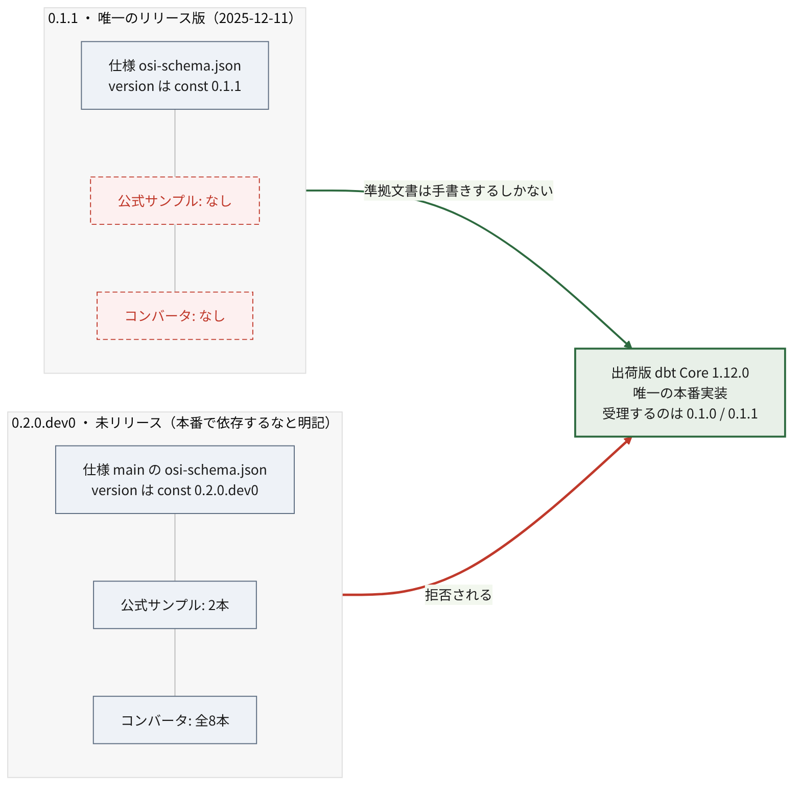

2 状況の整理
Apache Ossie を調べようとすると、技術の中身に入る前に どれを見ればいいのか分からないという壁に当たる。 名前・バージョン・ワーキンググループのいずれもが分裂しているためだ。
本章はその地形を先に片付ける。以降の章はここを前提とする。
2.1 名前が3つある
| 呼称 | 何を指すか |
|---|---|
| Open Semantic Interchange (OSI) | 2025年9月の発足時の名称。旧サイトや初期の記事はこれ |
| Apache Ossie (incubating) | 2026年6月22日の Apache Incubator 入りに伴う現名称 |
| OSI（別物） | Open Source Initiative、Open Systems Interconnection |
改名の理由は公式に明言されている。OSI という略称が他プロジェクトと紛らわしいためで、 仕様そのものに変更はない1。
ただし改名後の “Ossie” も完全に一意ではない。Virginia Tech 由来の SDR（Software Defined Radio）フレームワーク OSSIE と同名である。
検索するときは注意が要る。「OSI」で引くと Open Source Initiative の記事が大量に混ざり、 2026年6月以前の記事は旧名で書かれている。
2.2 バージョンが2つあり、どちらも中途半端
調べるうえで最も混乱しやすいのがここである。

0.1.1 は 2025-12-11 リリースの唯一のリリース版。 出荷版 dbt が受理するのはこちらである。 しかし公式サンプルもコンバータも存在しない。
0.2.0.dev0 は main ブランチの開発版。仕様本文に明記がある。
Schema is mutable; do not depend on this version in production
（スキーマは変わりうる。このバージョンに本番で依存しないこと。）
しかし公式サンプル2本もリポジトリ内のコンバータ8本も、すべてこちらを対象としている。
つまり「動く実装がある方」には手本がなく、「手本がある方」には動く実装がない。
この非対称が実害を生んでいることは チャプター 7 で示す。
2.2.1 ASF としての正式リリースは存在しない
さらに前提として、Apache Release は1本も出ていない。 3つの独立した一次情報が一致する2。
- Clutch ページが “No releases currently available”（利用可能なリリースなし）かつ “No PGP Signing Keys”（PGP 署名鍵なし）。 署名鍵すら未登録であり、そもそも Apache Release を出せる状態にない
dist.apache.org/repos/dist/release/incubator/に ossie ディレクトリが存在しない- GitHub の Releases は空
存在するタグは osi-0.1.1-rc1 ただ1つ。プレフィックスが osi- のままである点が重要で、 改名前・ASF 移管前に打たれたタグである。ASF のリリースプロセス （PPMC 投票 → IPMC 投票 → dist への配置）を通っておらず、 -rc1 の通りリリース候補止まりで正式リリースですらない。
したがって 「v0.1 系は Apache Release ではない」。
2.2.2 「v1.0」表記は誤りではない — 後から番号が下げられた
ベンダーブログや技術メディアが仕様を「v1.0」と表記していることがある3。 現在の仕様に 1.0 というバージョンは存在しないため、 これを誇張表現と受け取ってしまうかもしれない。実際にはそうではない。
仕様リポジトリの履歴を追うと、仕様は実際に Version: 1.0 を名乗っていた。
| 期間 | core-spec/spec.md の宣言 |
|---|---|
| 2025-12-12 〜 2026-01-16 以降 | 1.0 |
| 2026-03-09 〜 2026-04-20 | 0.1.1 |
| 2026-05-19 以降 | 0.2.0.dev0 |
2026年1月27日の仕様公開時点で、仕様は 1.0 だった。 各社はそれを正確に引用していたにすぎない。
番号を下げたのは以下のコミットである4。
2af09b2（2026-03-09、Khushboo Bhatia） — “Version change from 1.0 to 0.1.1” （バージョンを 1.0 から 0.1.1 へ変更）3f22030（2026-05-19、同） — “Bump version to 0.2.0.dev0 on main” （main のバージョンを 0.2.0.dev0 へ引き上げ）。 コミットメッセージに「release/0.1.1 を切って tag を打ったので、main は 破壊的変更を受け入れる開発版とする。main の利用者が リリース済みの 0.1.1 と取り違えないようにするため」とある
1.0 という完成を示唆する番号を、後から 0.1.1 へ引き下げたという事実は、 それ自体が状況を物語る。ASF 移管を前に、成熟度の表明を実態に合わせたと読める （ただし引き下げの理由はコミットメッセージに書かれておらず、動機は未確認）。
したがって「v1.0」と書かれた記事を見たら、それは 2026年3月以前の情報である可能性が高い。誤りではないが、古い。
現在の正しい理解は「リリース済みは 0.1.1 のみ、main は 0.2.0.dev0」であり、 これはプロジェクト自身のドキュメントの記述 （“current version: 0.2.0.dev0, latest released: 0.1.1” ＝現行版は 0.2.0.dev0、最新のリリース版は 0.1.1）とも一致する。
2.3 ワーキンググループの一覧が3系統ある
公式情報の中に、粒度も名称も異なる3つの一覧が並存している。
| 出典 | 数 | 内容 |
|---|---|---|
docs/working_groups.md |
5 | Metric Language and Relationships / Composability / Catalog / Ontology / Sync API |
| 公式サイト トップページ | 5 | Advanced Metrics & Expression Language / Composability / Catalog Integration / Ontology Representation / Model Converters & Developer Tools |
ROADMAP.md の Current Efforts |
3 | Metric Semantics & Core Semantic Model / Catalog Integration & Semantic Services / Ontology & Semantic Interoperability |
| Incubator 入りアナウンス | 3 | “Three working groups (Metric Language, Catalog and Ontology)” |
リポジトリ内のファイルはコミット 07be0176（2026-07-17）時点、 サイト側はいずれもアクセス日 2026-07-19 の内容である。
実態に最も近いのは1つ目である。
| ワーキンググループ | リード | Slack チャンネル |
|---|---|---|
| Metric Language and Relationships | Will Pugh | #metric-language-working-group |
| Composability | Dianne Wood（AtScale） | #wg-composability |
| Catalog | Shubham Bhargav（Atlan） | #wg-catalog |
| Ontology | Kurt Stirewalt（RelationalAI） | #osi-ontology |
| Sync API | Francois Lopitaux（ThoughtSpot） | #wg-sync-api |
各グループにリード担当者と Slack チャンネルが割り当てられており、 実際に会合が回っているのはこの単位であると判断した。 なお同ファイルのカレンダーリンクはいずれも “link TBD” のままで、 会合日程は公開されていない。
ROADMAP.md にはこれとは別に「Future Efforts」7項目があり、 こちらは着手前の構想である。
- Dataset Abstraction & Logical Modeling
- Semantic Query Language & Reference Engine
- SQL Dialect, Expressions, and Execution Boundaries
- Dimensions, Hierarchies, and Time Semantics
- AI-Native Semantic Layer
- Governance, Identity, and Validation
- Industry / Domain-Specific Semantic Models
Current Efforts の3件と Future Efforts の7件を一列に並べ、 「10個のワーキンググループがある」と紹介している記事がある。 筆者自身の過去記事がそうだった5。
ROADMAP の全リビジョンを追った限り、Current Efforts は 3 → 2 → 3 と推移しており、 一度も4件以上になっていない。したがって 将来構想を現行の作業と取り違えたものと思われる。
ただし断定は避けたい。当該記事の執筆時点で ROADMAP がどう見えていたかを 完全には再現できておらず、また節の見出しが “Current Efforts / Working Groups” と “Future Efforts” で 視覚的に紛らわしいという事情もある。
この不整合は2026年7月時点で解消されていない。 実際に動いているワークストリームを知りたければ、 リード担当者と Slack チャンネルが明記された docs/working_groups.md を見るのが確実である。
2.4 まとめ
本章で押さえた前提を再掲する。
- 現名称は Apache Ossie。2026年6月以前の情報は OSI の名で書かれている
- リリース済みの仕様は 0.1.1 のみ。
mainが示す0.2.0.dev0は 本番依存を禁ずる旨が明記された開発版 - Apache Release は1本も出ていない。「v1.0」は実在しない
- ワーキンググループの一覧は公式内で3系統に分かれている。 実態は
docs/working_groups.mdの5件
Apache Ossie, “Apache Ossie (Incubating): The New Name for Open Semantic Interchange”, アクセス日 2026-07-19↩︎
Apache Incubator, “Clutch: ossie” / “dist.apache.org 配布領域” / “GitHub Releases API”, いずれもアクセス日 2026-07-19↩︎
例: Salesforce, “Ending Semantic Drift” / StartupHub.ai, “Open Semantic Interchange v1.0 Ends Metric Drift”, アクセス日 2026-07-19↩︎
旧リポジトリ open-semantic-interchange/OSI の履歴より。コミット
2af09b2（2026-03-09）および3f22030（2026-05-19）。アクセス日 2026-07-19↩︎dobachi, “Open Semantic Interchange (OSI) 技術深掘り — スコープと利用実例”（2026-07-10 初版）。本調査を受けて 2026-07-19 に訂正済み。↩︎